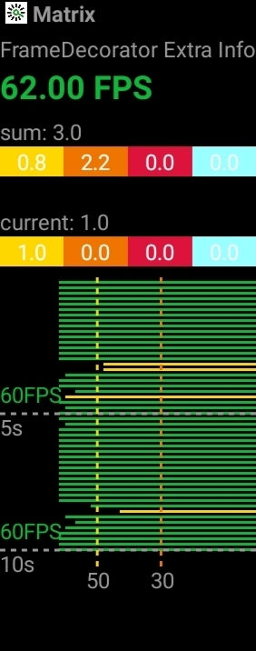

Matrix - TraceCanary 浅析
捕获掉帧/卡顿
什么是掉帧/卡顿
什么是卡顿，很多人能马上联系到的是帧率 FPS (每秒显示帧数)。那么多低的 FPS 才是卡顿呢？又或者低 FPS 真的就是卡顿吗？（以下 FPS 默认指平均帧率）
其实并非如此，举个例子，游戏玩家通常追求更流畅的游戏画面体验一般要达到 60FPS 以上，但我们平时看到的大部分电影或视频 FPS 其实不高，一般只有 25FPS ~ 30FPS，而实际上我们也没有觉得卡顿。 在人眼结构上看，当一组动作在 1 秒内有 12 次变化（即 12FPS），我们会认为这组动作是连贯的；而当大于 60FPS 时，人眼很难区分出来明显的变化，所以 60FPS 也一直作为业界衡量一个界面流畅程度的重要指标。一个稳定在 30FPS 的动画，我们不会认为是卡顿的，但一旦 FPS 很不稳定，人眼往往容易感知到。
FPS 低并不意味着卡顿发生，而卡顿发生 FPS 一定不高。 FPS 可以衡量一个界面的流程性，但往往不能很直观的衡量卡顿的发生，这里有另一个指标（掉帧程度）可以更直观地衡量卡顿。
什么是掉帧（跳帧）？ 按照理想帧率 60FPS 这个指标，计算出平均每一帧的准备时间有 1000ms/60 = 16.6667ms，如果一帧的准备时间超出这个值，则认为发生掉帧，超出的时间越长，掉帧程度越严重。假设每帧准备时间约 32ms，每次只掉一帧，那么 1 秒内实际只刷新 30 帧，即平均帧率只有 30FPS，但这时往往不会觉得是卡顿。反而如果出现某次严重掉帧（>300ms），那么这一次的变化，通常很容易感知到。所以界面的掉帧程度，往往可以更直观的反映出卡顿。
造成 掉帧 的直接原因通常是 doFrame 过于繁重执行超时，或者其他任务挤压了 doFrame 的执行时间，这些都会造成主线程不能在 帧间隔时间 内完成 ui 绘制
计算 Message 耗时
我们知道主线程是「生产者 - 消费者」模型，任务（Message）都在消息队列（MessageQueue）里排队等待执行，如果能够度量出每个 Message 的耗时，然后与某个阈值进行比较，我们就能找出耗时任务做进一步的优化
从下面的代码可以看到，Message 执行前后都会有特定格式的日志输出，只要捕获这些日志，就能计算出每个 Message 的耗时
public static void Looper.loop() {
// ...
for (;;) {
// ...
final Printer logging = me.mLogging;
if (logging != null) {
logging.println(">>>>> Dispatching to " + msg.target + " " +
msg.callback + ": " + msg.what);
}
// ...
msg.target.dispatchMessage(msg);
// ...
if (logging != null) {
logging.println("<<<<< Finished to " + msg.target + " " + msg.callback);
}
// ...
}
}LooperMonitor 通过替换 Looper.mLogging，从而捕获到 >>>>> Dispatching to 和 <<<<< Finished to 的日志输出进而算出 Message 耗时，并提供 dispatchStart 和 dispatchEnd 两个钩子
public class LooperMonitor {
// 通过反射替换 Looper.mLogging
private synchronized void resetPrinter() {
Printer originPrinter = null;
try {
if (!isReflectLoggingError) {
originPrinter = ReflectUtils.get(looper.getClass(), "mLogging", looper);
if (originPrinter == printer && null != printer) {
return;
}
}
} catch (Exception e) {
isReflectLoggingError = true;
Log.e(TAG, "[resetPrinter] %s", e);
}
if (null != printer) {
MatrixLog.w(TAG, "maybe thread:%s printer[%s] was replace other[%s]!",
looper.getThread().getName(), printer, originPrinter);
}
looper.setMessageLogging(printer = new LooperPrinter(originPrinter));
if (null != originPrinter) {
MatrixLog.i(TAG, "reset printer, originPrinter[%s] in %s", originPrinter, looper.getThread().getName());
}
}
// 捕获根据特定格式的日志输出
class LooperPrinter implements Printer {
public void println(String x) {
if (null != origin) {
origin.println(x);
if (origin == this) {
throw new RuntimeException(TAG + " origin == this");
}
}
if (!isHasChecked) {
isValid = x.charAt(0) == '>' || x.charAt(0) == '<';
isHasChecked = true;
if (!isValid) {
MatrixLog.e(TAG, "[println] Printer is inValid! x:%s", x);
}
}
if (isValid) {
dispatch(x.charAt(0) == '>', x);
}
}
}
// 分发 Dispatching to 和 Finished to 事件
private void dispatch(boolean isBegin, String log) {
for (LooperDispatchListener listener : listeners) {
if (listener.isValid()) {
if (isBegin) {
if (!listener.isHasDispatchStart) {
listener.onDispatchStart(log);
}
} else {
if (listener.isHasDispatchStart) {
listener.onDispatchEnd(log);
}
}
} else if (!isBegin && listener.isHasDispatchStart) {
listener.dispatchEnd();
}
}
}
}为了防止其他代码也替换 Looper.mLogging，LooperMonitor 还在主线程空闲的时候进行检查
public boolean LooperMonitor.queueIdle() {
if (SystemClock.uptimeMillis() - lastCheckPrinterTime >= CHECK_TIME) {
resetPrinter();
lastCheckPrinterTime = SystemClock.uptimeMillis();
}
return true;
}计算 doFrame 耗时
上面的方法可以统计主线程里每个 Message 的耗时，但并不是每个 Message 都在做 ui 绘制（doFrame），比如违规放入耗时的 IO 操作；为了更精确地捕获耗时的 doFrame，以及进行 FPS 统计，还需做更多的工作
参考 Android 图形栈（一）vsync 我们知道，当 APP_VSYNC 到达时会走 FrameDisplayEventReceiver.onVsync -> Choreographer.doFrame -> Choreographer.doCallbacks，最后按 INPUT - ANIMATION - TRAVERSAL 的顺序执行 Choreographer.mCallbackQueues 里的 Runnable
动态地往这三个队列的头部插入钩子，从而计算出每个阶段开始时间和结束时间，加上捕获 Message 的方法（Choreographer.doFrame 是由 FrameDisplayEventReceiver.onVsync 放入主线程任务队列的 Message），最终形成完整的闭环：
dispatchBegin -> doFrameBegin -> doQueueBegin(INPUT) -> doQueueEnd(INPUT) -> doQueueBegin(ANIMATION) -> doQueueEnd(ANIMATION) -> doQueueBegin(TRAVERSAL) -> doQueueEnd(TRAVERSAL) -> doFrameEnd -> dispatchEnd
public class UIThreadMonitor {
// 最开始先在 INPUT 头部插入钩子
public synchronized void UIThreadMonitor.onStart() {
// ...
queueStatus = new int[CALLBACK_LAST + 1];
queueCost = new long[CALLBACK_LAST + 1];
addFrameCallback(CALLBACK_INPUT, this, true);
}
// 依次往 ANIMATION/TRAVERSAL 插入钩子
public void run() {
final long start = System.nanoTime();
try {
doFrameBegin(token);
doQueueBegin(CALLBACK_INPUT);
addFrameCallback(CALLBACK_ANIMATION, new Runnable() {
@Override
public void run() {
doQueueEnd(CALLBACK_INPUT);
doQueueBegin(CALLBACK_ANIMATION);
}
}, true);
addFrameCallback(CALLBACK_TRAVERSAL, new Runnable() {
@Override
public void run() {
doQueueEnd(CALLBACK_ANIMATION);
doQueueBegin(CALLBACK_TRAVERSAL);
}
}, true);
} finally {
if (config.isDevEnv()) {
MatrixLog.d(TAG, "[UIThreadMonitor#run] inner cost:%sns", System.nanoTime() - start);
}
}
}
// 主线程消息队列的任务结束钩子，也作为 TRAVERSAL 的结束标志
private void dispatchEnd() {
// ...
long startNs = token;
long intendedFrameTimeNs = startNs;
if (isVsyncFrame) {
doFrameEnd(token);
intendedFrameTimeNs = getIntendedFrameTimeNs(startNs); // FrameDisplayEventReceiver.mTimestampNanos
}
// ...
}
private void doFrameEnd(long token) {
doQueueEnd(CALLBACK_TRAVERSAL);
// ...
addFrameCallback(CALLBACK_INPUT, this, true); // 继续放入下一轮 doFrame 的钩子
}
}LooperObserver
结合上面捕获到的信息，提供一个「观察者」
public abstract class LooperObserver {
private boolean isDispatchBegin = false;
/**
* Message 开始执行
* @param beginNs 开始时间（System.nanoTime）
* @param cpuBeginNs 线程的开始时间（SystemClock.currentThreadTimeMillis）
* @param token 等于 beginNs
*/
@CallSuper
public void dispatchBegin(long beginNs, long cpuBeginNs, long token) {
isDispatchBegin = true;
}
/**
* Message 耗时统计
* @param focusedActivity 当前页面（Activity）
* @param startNs Message 的开始时间（等于 beginNs）
* @param endNs Message 的结束时间（等于 endNs）
* @param isVsyncFrame 是否 ui 绘制任务（doFrame）
* @param intendedFrameTimeNs 收到 APP_VSYNC 信号的时间（FrameDisplayEventReceiver.onVsync）
* @param inputCostNs doFrame INPUT 阶段耗时
* @param animationCostNs doFrame ANIMATION 阶段耗时
* @param traversalCostNs doFrame TRAVERSAL 阶段耗时
*/
public void doFrame(String focusedActivity, long startNs, long endNs, boolean isVsyncFrame, long intendedFrameTimeNs, long inputCostNs, long animationCostNs, long traversalCostNs) {
}
/**
* Message 结束执行
* @param beginNs 开始时间
* @param cpuBeginMs 线程的开始时间
* @param endNs 结束时间
* @param cpuEndMs 结束的线程时间
* @param token 等于 beginNs
* @param isVsyncFrame 此任务是否 ui 绘制任务（doFrame）
*/
@CallSuper
public void dispatchEnd(long beginNs, long cpuBeginMs, long endNs, long cpuEndMs, long token, boolean isVsyncFrame) {
isDispatchBegin = false;
}
public boolean isDispatchBegin() {
return isDispatchBegin;
}
}计算 FPS
我们将掉帧数划分出几个区间进行定级，掉帧数小于 3 帧的情况属于最佳，依次类推，见下表：
Best Normal Middle High Frozen [0:3) [3:9) [9:24) [24:42) [42:∞) 相比单看平均帧率，掉帧程度的分布可以明显的看出，界面卡顿（平均帧率低）的原因是因为连续轻微的掉帧，还是某次严重掉帧造成的。再通过
Activity区分不同场景，计算每个界面在有效绘制的时间片内，掉帧程度的分布情况及平均帧率，从而来评估出一个界面的整体流畅程度。
也就是说，一次掉帧可能掉了一帧、两帧或者更多帧（掉帧数），这里根据上表把一次掉帧划分为 Best/Normal/Middle/High/Frozen 五个级别，后续评价掉帧时就不再关注掉帧数而是 掉帧次数 及其严重级别
下图绿色的 62.00 FPS 指的是过去 200ms 内的平均帧率
灰色的 sum: 3.0 是 总掉帧次数，下面的彩虹从左到右分别代表 Normal/Middle/High/Frozen 这四个级别的掉帧占总掉帧的比例，往下是当前页面的掉帧数和掉帧比例
最底下的图表是过去 10s 内平均帧率（200ms 时间段）的横向柱状图，每 5s 就会有 25 条记录，50 FPS 差不多是 Normal 的帧率下限，30 FPS 差不多是 Middle 的帧率下限

// 每帧的时间间隔，默认取 16ms（60 FPS）
public class UIThreadMonitor {
private long frameIntervalNanos = 16666666;
public void init(TraceConfig config) {
frameIntervalNanos = ReflectUtils.reflectObject(choreographer, "mFrameIntervalNanos", Constants.DEFAULT_FRAME_DURATION);
// ...
}
}
public class FrameTracer {
private final long frameIntervalNs; // UIThreadMonitor.getMonitor().getFrameIntervalNanos()
private void notifyListener(final String focusedActivity, final long startNs, final long endNs, final boolean isVsyncFrame,
final long intendedFrameTimeNs, final long inputCostNs, final long animationCostNs, final long traversalCostNs) {
long traceBegin = System.currentTimeMillis();
try {
final long jiter = endNs - intendedFrameTimeNs; // 从收到 vsync 到完成 doFrame 的时间，也就是实际渲染一帧的耗时
final int dropFrame = (int) (jiter / frameIntervalNs); // 计算出渲染这一帧对比理论 FPS 有没掉帧，掉了多少帧
// ...
}
}
}
public class FrameDecorator {
public void doFrameAsync(String focusedActivity, long startNs, long endNs, int dropFrame, boolean isVsyncFrame, long intendedFrameTimeNs, long inputCostNs, long animationCostNs, long traversalCostNs) {
super.doFrameAsync(focusedActivity, startNs, endNs, dropFrame, isVsyncFrame, intendedFrameTimeNs, inputCostNs, animationCostNs, traversalCostNs);
if (!Objects.equals(focusedActivity, lastVisibleScene)) { // 切换页面时，重置页面的统计数据
dropLevel = new int[FrameTracer.DropStatus.values().length];
lastVisibleScene = focusedActivity;
lastCost[0] = 0;
lastFrames[0] = 0;
}
// 为什么不是用 endNs ？
// 1，因为 doFrame 执行完还要等 surfacefling 在下一帧的时间点进行合成和显示，而不是 doFrame 后立即显示，所以要用 frameIntervalMs 的倍数
// 2，其次考虑用户无操作/页面静止的情况，主线程的任务队列为空，没有刷新页面，如果用设备时间 endNs 会导致计算出极低的错误 FPS
sumFrameCost += (dropFrame + 1) * frameIntervalMs;
sumFrames += 1;
float duration = sumFrameCost - lastCost[0]; // 距离上一次刷新 FPS 的时间间隔
if (dropFrame >= Constants.DEFAULT_DROPPED_FROZEN) { // 根据掉帧数，给发生的掉帧事故分级别统计
dropLevel[FrameTracer.DropStatus.DROPPED_FROZEN.index]++;
sumDropLevel[FrameTracer.DropStatus.DROPPED_FROZEN.index]++;
belongColor = frozenColor;
} else if (dropFrame >= Constants.DEFAULT_DROPPED_HIGH) {
dropLevel[FrameTracer.DropStatus.DROPPED_HIGH.index]++;
sumDropLevel[FrameTracer.DropStatus.DROPPED_HIGH.index]++;
if (belongColor != frozenColor) {
belongColor = highColor;
}
} // ...
long collectFrame = sumFrames - lastFrames[0]; // 200ms 内刷新了几帧
if (duration >= 200) { // 每隔 200ms 刷新一次 FPS
final float fps = Math.min(maxFps, 1000.f * collectFrame / duration); // 统计过去 200ms 的 FPS
updateView(view, fps, belongColor, dropLevel[FrameTracer.DropStatus.DROPPED_NORMAL.index], dropLevel[FrameTracer.DropStatus.DROPPED_MIDDLE.index] ...);
lastCost[0] = sumFrameCost;
lastFrames[0] = sumFrames;
// ...
}
}
}统计耗时 Message
TraceCanary 把耗时超过 700ms 的 Message 作为 Evil Method 上报
public class EvilMethodTracer {
public void dispatchEnd(long beginNs, long cpuBeginMs, long endNs, long cpuEndMs, long token, boolean isVsyncFrame) {
long dispatchCost = (endNs - beginNs) / Constants.TIME_MILLIS_TO_NANO;
try {
if (dispatchCost >= evilThresholdMs) {
// ...
}
}
}
}无埋点插桩收集函数耗时
为了在捕捉到卡顿堆栈后，获取各个函数的执行耗时，需要对所有函数进行无埋点插桩，在函数执行前调用 MethodBeat.i，在函数执行后调用 MethodBeat.o
通过代理编译期间的任务
transformClassesWithDexTask，将全局class文件作为输入，利用ASM工具，高效地对所有class文件进行扫描及插桩插桩过程有几个关键点：
- 选择在该编译任务执行时插桩，是因为
proguard操作是在该任务之前就完成的，意味着插桩时的class文件已经被混淆过的。而选择proguard之后去插桩，是因为如果提前插桩会造成部分方法不符合内联规则，没法在proguard时进行优化，最终导致程序方法数无法减少，从而引发方法数过大问题- 为了减少插桩量及性能损耗，通过遍历
class方法指令集，判断扫描的函数是否只含有PUT/READ FIELD等简单的指令，来过滤一些默认或匿名构造函数，以及get/set等简单不耗时函数- 针对界面启动耗时，因为要统计从
Activity.onCreate到Activity.onWindowFocusChange间的耗时，所以在插桩过程中需要收集应用内所有Activity的实现类，并覆盖onWindowFocusChange函数进行打点- 为了方便及高效记录函数执行过程，我们为每个插桩的函数分配一个独立 ID，在插桩过程中，记录插桩的函数签名及分配的 ID，在插桩完成后输出一份 mapping，作为数据上报后的解析支持。
归纳起来，编译期所做的工作如下图：

Gradle Transform
ignoreMethodMapFilePath 上面说过为了减少插桩量及性能损耗会忽略一些函数，这些被忽略的函数记录在此文件里（默认放在 /app/build/outputs/mapping/{var}/ignoreMethodMapping.txt），大概长这样：
ignore methods:
android.arch.core.executor.ArchTaskExecutor <clinit> ()V
android.arch.core.executor.ArchTaskExecutor <init> ()V
android.arch.core.executor.ArchTaskExecutor$1 execute (Ljava.lang.Runnable;)V
android.arch.core.executor.DefaultTaskExecutor executeOnDiskIO (Ljava.lang.Runnable;)V
android.arch.core.internal.FastSafeIterableMap <init> ()V
android.arch.core.internal.FastSafeIterableMap ceil (Ljava.lang.Object;)Ljava.util.Map$Entry;
android.arch.core.internal.SafeIterableMap size ()I
android.arch.core.internal.SafeIterableMap equals (Ljava.lang.Object;)Z
android.arch.core.internal.SafeIterableMap$AscendingIterator backward (Landroid.arch.core.internal.SafeIterableMap$Entry;)Landroid.arch.core.internal.SafeIterableMap$Entry;
android.arch.core.internal.SafeIterableMap$AscendingIterator forward (Landroid.arch.core.internal.SafeIterableMap$Entry;)Landroid.arch.core.internal.SafeIterableMap$Entry;
android.arch.core.internal.SafeIterableMap$AscendingIterator <init> (Landroid.arch.core.internal.SafeIterableMap$Entry;Landroid.arch.core.internal.SafeIterableMap$Entry;)VmethodMapFilePath 函数签名和函数 ID 的映射（默认放在 /app/build/outputs/mapping/{var}/methodMapping.txt），大概长这样：
1,1,sample.tencent.matrix.MainActivity$6 run ()V
2,10,sample.tencent.matrix.MatrixApplication initSQLiteLintConfig ()Lcom.tencent.sqlitelint.config.SQLiteLintConfig;
3,1,sample.tencent.matrix.MainActivity$5 onClick (Landroid.view.View;)V
4,1,sample.tencent.matrix.MainActivity$4 onClick (Landroid.view.View;)V
5,4,sample.tencent.matrix.MainActivity onResume ()V
6,1,sample.tencent.matrix.MatrixApplication onCreate ()V
7,1,sample.tencent.matrix.MainActivity$3 onClick (Landroid.view.View;)V
8,4,sample.tencent.matrix.MainActivity onCreate (Landroid.os.Bundle;)V
9,1,sample.tencent.matrix.MainActivity$2 onClick (Landroid.view.View;)V
10,1,org.apache.commons.io.comparator.DirectoryFileComparator compare (Ljava.io.File;Ljava.io.File;)ITraceCanary 用 Transform API 处理并输出插桩后的 class
class MatrixTraceTransform: Transform() {
// Transform 的名称
override fun getName(): String {
return "MatrixTraceTransform"
}
// Transform 接收 Input 处理并输出 Output
// 这里声明 MatrixTraceTransform 接收所有的 class，包括 class 文件和 jar 包中的 class
override fun getInputTypes(): Set<QualifiedContent.ContentType> {
return TransformManager.CONTENT_CLASS
}
// 指定 class 的范围，限定项目内的所有 class
override fun getScopes(): MutableSet<in QualifiedContent.Scope>? {
return TransformManager.SCOPE_FULL_PROJECT
}
// 支持增量编译
override fun isIncremental(): Boolean {
return true
}
override fun transform(transformInvocation: TransformInvocation) {
super.transform(transformInvocation)
// ...
transforming(transformInvocation)
}
// 核心逻辑
private fun transforming(invocation: TransformInvocation) {
val start = System.currentTimeMillis()
val outputProvider = invocation.outputProvider!!
val isIncremental = invocation.isIncremental && this.isIncremental
if (!isIncremental) {
outputProvider.deleteAll()
}
val config = configure(invocation)
val changedFiles = ConcurrentHashMap<File, Status>() // 需要进行插桩的 class/jar
val inputToOutput = ConcurrentHashMap<File, File>() // Input Dir -> Output Dir，Input Jar -> Output Jar
val inputFiles = ArrayList<File>() // Input Dir && Input Jar
var transformDirectory: File? = null
for (input in invocation.inputs) {
// 遍历并添加 class 文件
for (directoryInput in input.directoryInputs) {
changedFiles.putAll(directoryInput.changedFiles)
val inputDir = directoryInput.file
inputFiles.add(inputDir)
val outputDirectory = outputProvider.getContentLocation(
directoryInput.name,
directoryInput.contentTypes,
directoryInput.scopes,
Format.DIRECTORY)
inputToOutput[inputDir] = outputDirectory
if (transformDirectory == null) transformDirectory = outputDirectory.parentFile
}
// 遍历并添加 jar 包
for (jarInput in input.jarInputs) {
val inputFile = jarInput.file
changedFiles[inputFile] = jarInput.status
inputFiles.add(inputFile)
val outputJar = outputProvider.getContentLocation(
jarInput.name,
jarInput.contentTypes,
jarInput.scopes,
Format.JAR)
inputToOutput[inputFile] = outputJar
if (transformDirectory == null) transformDirectory = outputJar.parentFile
}
}
if (inputFiles.size == 0 || transformDirectory == null) {
Log.i(TAG, "Matrix trace do not find any input files")
return
}
// 执行插桩
val outputDirectory = transformDirectory
MatrixTrace(
ignoreMethodMapFilePath = config.ignoreMethodMapFilePath,
methodMapFilePath = config.methodMapFilePath,
baseMethodMapPath = config.baseMethodMapPath, // 上一次插桩的 method mapping file，记录了已分配的 method id，插桩时要复用
blockListFilePath = config.blockListFilePath, // 黑名单机制，忽略匹配的函数
mappingDir = config.mappingDir // Proguard mapping file
).doTransform(
classInputs = inputFiles,
changedFiles = changedFiles,
isIncremental = isIncremental,
traceClassDirectoryOutput = outputDirectory,
inputToOutput = inputToOutput,
legacyReplaceChangedFile = null,
legacyReplaceFile = null)
val cost = System.currentTimeMillis() - start
Log.i(TAG, " Insert matrix trace instrumentations cost time: %sms.", cost)
}
private fun configure(transformInvocation: TransformInvocation): Configuration {
val buildDir = project.buildDir.absolutePath
val dirName = transformInvocation.context.variantName
val mappingOut = Joiner.on(File.separatorChar).join(
buildDir,
FD_OUTPUTS,
"mapping",
dirName)
return Configuration.Builder()
.setBaseMethodMap(extension.baseMethodMapFile)
.setBlockListFile(extension.blackListFile)
.setMethodMapFilePath("$mappingOut/methodMapping.txt")
.setIgnoreMethodMapFilePath("$mappingOut/ignoreMethodMapping.txt")
.setMappingPath(mappingOut)
.build()
}
}解析配置文件
fun MatrixTrace.doTransform(...) {
val executor: ExecutorService = Executors.newFixedThreadPool(16)
val config = Configuration.Builder()
.setIgnoreMethodMapFilePath(ignoreMethodMapFilePath)
.setMethodMapFilePath(methodMapFilePath)
.setBaseMethodMap(baseMethodMapPath)
.setBlockListFile(blockListFilePath)
.setMappingPath(mappingDir)
.build()
/**
* step 1
*/
var start = System.currentTimeMillis()
val futures = LinkedList<Future<*>>()
val mappingCollector = MappingCollector()
val methodId = AtomicInteger(0)
val collectedMethodMap = ConcurrentHashMap<String, TraceMethod>()
// 在线程池里解析各种 mapping file
futures.add(executor.submit(ParseMappingTask(
mappingCollector, collectedMethodMap, methodId, config)))
// 在线程池里扫描 class dir 和 jar，将 Input 和 Output 映射好放在下面的两个 map 里
val dirInputOutMap = ConcurrentHashMap<File, File>()
val jarInputOutMap = ConcurrentHashMap<File, File>()
for (file in classInputs) {
if (file.isDirectory) {
futures.add(executor.submit(CollectDirectoryInputTask(
directoryInput = file,
mapOfChangedFiles = changedFiles,
mapOfInputToOutput = inputToOutput,
isIncremental = isIncremental,
traceClassDirectoryOutput = traceClassDirectoryOutput,
legacyReplaceChangedFile = legacyReplaceChangedFile,
legacyReplaceFile = legacyReplaceFile,
resultOfDirInputToOut = dirInputOutMap
)))
} else {
val status = Status.CHANGED
futures.add(executor.submit(CollectJarInputTask(
inputJar = file,
inputJarStatus = status,
inputToOutput = inputToOutput,
isIncremental = isIncremental,
traceClassFileOutput = traceClassDirectoryOutput,
legacyReplaceFile = legacyReplaceFile,
resultOfDirInputToOut = dirInputOutMap,
resultOfJarInputToOut = jarInputOutMap
)))
}
}
for (future in futures) {
future.get()
}
futures.clear()
Log.i(TAG, "[doTransform] Step(1)[Parse]... cost:%sms", System.currentTimeMillis() - start)
// ...
}
class ParseMappingTask(...) : Runnable {
override fun run() {
val start = System.currentTimeMillis()
val mappingFile = File(config.mappingDir, "mapping.txt") // 解析 Proguard mapping file
if (mappingFile.isFile) {
val mappingReader = MappingReader(mappingFile)
mappingReader.read(mappingCollector)
}
val size = config.parseBlockFile(mappingCollector) // 解析黑名单
val baseMethodMapFile = File(config.baseMethodMapPath) // 加载已分配 method id 的函数列表
getMethodFromBaseMethod(baseMethodMapFile, collectedMethodMap)
retraceMethodMap(mappingCollector, collectedMethodMap)
Log.i(TAG, "[ParseMappingTask#run] cost:%sms, black size:%s, collect %s method from %s",
System.currentTimeMillis() - start, size, collectedMethodMap.size, config.baseMethodMapPath)
}
}收集匹配的函数
fun MatrixTrace.doTransform(...) {
// ... step 2 在线程池里用 ASM 解析 class 并收集匹配的函数
start = System.currentTimeMillis()
val methodCollector = MethodCollector(executor, mappingCollector, methodId, config, collectedMethodMap)
methodCollector.collect(dirInputOutMap.keys, jarInputOutMap.keys)
Log.i(TAG, "[doTransform] Step(2)[Collection]... cost:%sms", System.currentTimeMillis() - start)
// ...
}// 搜集匹配的函数
public void MethodCollector.collect(Set<File> srcFolderList, Set<File> dependencyJarList) throws ExecutionException, InterruptedException {
List<Future> futures = new LinkedList<>();
for (File srcFile : srcFolderList) { // 在 class 里收集匹配的函数
ArrayList<File> classFileList = new ArrayList<>();
if (srcFile.isDirectory()) {
listClassFiles(classFileList, srcFile);
} else {
classFileList.add(srcFile);
}
for (File classFile : classFileList) {
futures.add(executor.submit(new CollectSrcTask(classFile)));
}
}
for (File jarFile : dependencyJarList) { // 在 jar 包里收集匹配的函数
futures.add(executor.submit(new CollectJarTask(jarFile)));
}
for (Future future : futures) {
future.get();
}
futures.clear();
futures.add(executor.submit(new Runnable() {
@Override
public void run() {
saveIgnoreCollectedMethod(mappingCollector); // 写入 ignored methods 到文件里
}
}));
futures.add(executor.submit(new Runnable() {
@Override
public void run() {
saveCollectedMethod(mappingCollector); // 将 method id -> method 映射写入文件里
}
}));
for (Future future : futures) {
future.get();
}
futures.clear();
}
// 用 ASM Core API 解析并找到匹配的函数
public void CollectMethodNode.visitEnd() {
super.visitEnd();
TraceMethod traceMethod = TraceMethod.create(0, access, className, name, desc);
if ("<init>".equals(name)) {
isConstructor = true;
}
// 过滤掉空函数、getter/setter 等，加入 ignored method file 里
boolean isNeedTrace = isNeedTrace(configuration, traceMethod.className, mappingCollector);
if ((isEmptyMethod() || isGetSetMethod() || isSingleMethod())
&& isNeedTrace) {
ignoreCount.incrementAndGet();
collectedIgnoreMethodMap.put(traceMethod.getMethodName(), traceMethod);
return;
}
// 需要插桩的函数，如果没有 method id 则分配一个自增的 method id，加入 collectedMethodMap
if (isNeedTrace && !collectedMethodMap.containsKey(traceMethod.getMethodName())) {
traceMethod.id = methodId.incrementAndGet();
collectedMethodMap.put(traceMethod.getMethodName(), traceMethod);
incrementCount.incrementAndGet();
} else if (!isNeedTrace && !collectedIgnoreMethodMap.containsKey(traceMethod.className)) {
ignoreCount.incrementAndGet();
collectedIgnoreMethodMap.put(traceMethod.getMethodName(), traceMethod);
}
}
// Jar 包则用 ZipFile API 遍历，依然用 ASM 解析
class CollectJarTask implements Runnable {
public void run() {
ZipFile zipFile = null;
try {
zipFile = new ZipFile(fromJar);
Enumeration<? extends ZipEntry> enumeration = zipFile.entries();
while (enumeration.hasMoreElements()) {
ZipEntry zipEntry = enumeration.nextElement();
String zipEntryName = zipEntry.getName();
if (isNeedTraceFile(zipEntryName)) {
InputStream inputStream = zipFile.getInputStream(zipEntry);
ClassReader classReader = new ClassReader(inputStream);
ClassWriter classWriter = new ClassWriter(ClassWriter.COMPUTE_MAXS);
ClassVisitor visitor = new TraceClassAdapter(Opcodes.ASM5, classWriter);
classReader.accept(visitor, 0);
}
}
}
// ...
}
}执行插桩操作
fun MatrixTrace.doTransform(...) {
// ... step 3 执行插桩操作
start = System.currentTimeMillis()
val methodTracer = MethodTracer(executor, mappingCollector, config, methodCollector.collectedMethodMap, methodCollector.collectedClassExtendMap)
methodTracer.trace(dirInputOutMap, jarInputOutMap)
Log.i(TAG, "[doTransform] Step(3)[Trace]... cost:%sms", System.currentTimeMillis() - start)
}public void MethodTracer.trace(Map<File, File> srcFolderList, Map<File, File> dependencyJarList) throws ExecutionException, InterruptedException {
List<Future> futures = new LinkedList<>();
traceMethodFromSrc(srcFolderList, futures); // 处理 class
traceMethodFromJar(dependencyJarList, futures); // 处理 jar
for (Future future : futures) {
future.get();
}
futures.clear();
}
// 一个线程处理一个 class/dir
private void traceMethodFromSrc(Map<File, File> srcMap, List<Future> futures) {
if (null != srcMap) {
for (Map.Entry<File, File> entry : srcMap.entrySet()) {
futures.add(executor.submit(new Runnable() {
public void run() { innerTraceMethodFromSrc(entry.getKey(), entry.getValue()); }
}));
}
}
}
private void innerTraceMethodFromSrc(File input, File output) {
// ... 依然是 ASM 里 classReader，classWriter 和 classVisitor 的经典用法
is = new FileInputStream(classFile);
ClassReader classReader = new ClassReader(is);
ClassWriter classWriter = new ClassWriter(ClassWriter.COMPUTE_MAXS);
ClassVisitor classVisitor = new TraceClassAdapter(Opcodes.ASM5, classWriter); // 重要的类
classReader.accept(classVisitor, ClassReader.EXPAND_FRAMES);
// ...
}
public MethodVisitor TraceClassAdapter.visitMethod(int access, String name, String desc,
String signature, String[] exceptions) {
if (isABSClass) {
return super.visitMethod(access, name, desc, signature, exceptions);
} else {
if (!hasWindowFocusMethod) { // 匹配 Activity.onWindowFocusChanged，做页面打开速度统计
hasWindowFocusMethod = MethodCollector.isWindowFocusChangeMethod(name, desc);
}
MethodVisitor methodVisitor = cv.visitMethod(access, name, desc, signature, exceptions);
return new TraceMethodAdapter(api, methodVisitor, access, name, desc, this.className,
hasWindowFocusMethod, isActivityOrSubClass, isNeedTrace);
}
}
// 匹配 Activity.onWindowFocusChanged(boolean hasFocus)
public final static String MATRIX_TRACE_ON_WINDOW_FOCUS_METHOD = "onWindowFocusChanged";
public final static String MATRIX_TRACE_ON_WINDOW_FOCUS_METHOD_ARGS = "(Z)V";
public static boolean isWindowFocusChangeMethod(String name, String desc) {
return null != name && null != desc && name.equals(TraceBuildConstants.MATRIX_TRACE_ON_WINDOW_FOCUS_METHOD)
&& desc.equals(TraceBuildConstants.MATRIX_TRACE_ON_WINDOW_FOCUS_METHOD_ARGS);
}
public void TraceClassAdapter.visitEnd() {
if (!hasWindowFocusMethod && isActivityOrSubClass && isNeedTrace) {
insertWindowFocusChangeMethod(cv, className);
}
super.visitEnd();
}
// 如果 Activity 没有覆盖 onWindowFocusChanged 则覆盖之（需要在里面插桩统计页面打开速度）
private void insertWindowFocusChangeMethod(ClassVisitor cv, String classname) {
MethodVisitor methodVisitor = cv.visitMethod(Opcodes.ACC_PUBLIC, TraceBuildConstants.MATRIX_TRACE_ON_WINDOW_FOCUS_METHOD,
TraceBuildConstants.MATRIX_TRACE_ON_WINDOW_FOCUS_METHOD_ARGS, null, null);
methodVisitor.visitCode();
methodVisitor.visitVarInsn(Opcodes.ALOAD, 0);
methodVisitor.visitVarInsn(Opcodes.ILOAD, 1);
methodVisitor.visitMethodInsn(Opcodes.INVOKESPECIAL, TraceBuildConstants.MATRIX_TRACE_ACTIVITY_CLASS,
TraceBuildConstants.MATRIX_TRACE_ON_WINDOW_FOCUS_METHOD, TraceBuildConstants.MATRIX_TRACE_ON_WINDOW_FOCUS_METHOD_ARGS, false);
traceWindowFocusChangeMethod(methodVisitor, classname);
methodVisitor.visitInsn(Opcodes.RETURN);
methodVisitor.visitMaxs(2, 2);
methodVisitor.visitEnd();
}
private class TraceMethodAdapter extends AdviceAdapter {
// 进入函数后先执行 MethodBeat.i
protected void onMethodEnter() {
TraceMethod traceMethod = collectedMethodMap.get(methodName);
if (traceMethod != null) {
traceMethodCount.incrementAndGet();
mv.visitLdcInsn(traceMethod.id);
mv.visitMethodInsn(INVOKESTATIC, TraceBuildConstants.MATRIX_TRACE_CLASS, "i", "(I)V", false);
// 在 onWindowFocusChanged 插入 AppMethodBeat.at
if (checkNeedTraceWindowFocusChangeMethod(traceMethod)) {
traceWindowFocusChangeMethod(mv, className);
}
}
}
// 退出函数前，执行 MethodBeat.o
protected void onMethodExit(int opcode) {
TraceMethod traceMethod = collectedMethodMap.get(methodName);
if (traceMethod != null) {
traceMethodCount.incrementAndGet();
mv.visitLdcInsn(traceMethod.id);
mv.visitMethodInsn(INVOKESTATIC, TraceBuildConstants.MATRIX_TRACE_CLASS, "o", "(I)V", false);
}
}
}
// jar 包一样的，只不过用的 ZipFile API 那套 ...收集函数执行耗时
用一个 long 记录 i/o 函数调用，高位第一位表示是 i 函数还是 o 函数，后续 20 位存储 method id，低位 43 位存储 相对时间戳；运行时分配一个 100W 长度的 long 数组（占内存 7.6M）来存储，从索引 0 开始逐步递增到数组尾部，满了又从索引 0 开始，会覆盖旧数据，但因为 100W 足够大，用来收集栈帧执行时间足够了
编译期已经对全局的函数进行插桩，在运行期间每个函数的执行前后都会调用 MethodBeat.i/o 的方法，如果是在主线程中执行，则在函数的执行前后获取当前距离 MethodBeat 模块初始化的时间 offset（为了压缩数据，存进一个long类型变量中），并将当前执行的是 MethodBeat i或者o、mehtod id 及时间 offset，存放到一个 long 类型变量中，记录到一个预先初始化好的数组 long[] 中 index 的位置（预先分配记录数据的 buffer 长度为 100w，内存占用约 7.6M）。


// 记录函数的开始时间
public static void AppMethodBeat.i(int methodId) {
// ...
if (threadId == sMainThreadId) { // 只关心主线程的慢函数，其他线程不记录
if (assertIn) { // 防止重入
android.util.Log.e(TAG, "ERROR!!! AppMethodBeat.i Recursive calls!!!");
return;
}
assertIn = true;
if (sIndex < Constants.BUFFER_SIZE) { // buffer 满了则重头开始，会覆盖掉旧数据
mergeData(methodId, sIndex, true);
} else {
sIndex = 0;
mergeData(methodId, sIndex, true);
}
++sIndex;
assertIn = false;
}
}
// 插入 buffer
private static void AppMethodBeat.mergeData(int methodId, int index, boolean isIn) {
if (methodId == AppMethodBeat.METHOD_ID_DISPATCH) {
sCurrentDiffTime = SystemClock.uptimeMillis() - sDiffTime;
}
long trueId = 0L; // 构造函数执行时间戳，第一位表示 i/o 操作
if (isIn) {
trueId |= 1L << 63;
}
trueId |= (long) methodId << 43; // 后续 20 位存储 method id
trueId |= sCurrentDiffTime & 0x7FFFFFFFFFFL; // 低 43 位存储相对时间戳
sBuffer[index] = trueId;
checkPileup(index);
sLastIndex = index;
}
// 记录函数的结束时间，跟上面是一样的
public static void AppMethodBeat.o(int methodId) {
// ...
if (Thread.currentThread().getId() == sMainThreadId) {
if (sIndex < Constants.BUFFER_SIZE) {
mergeData(methodId, sIndex, false);
} else {
sIndex = 0;
mergeData(methodId, sIndex, false);
}
++sIndex;
}
}值得注意的是，因为只有低 43 位存储时间戳，如果存储完整的时间戳那是不足的，而且在分析函数执行耗时用的是 duration = end - start，实际上不需要完整的时间戳，所以这里记录的是相对时间戳（sCurrentDiffTime）；而且为了性能，不在 i/o 函数里执行 SystemClock.uptimeMillis()
sDiffTime 记录加载类 AppMethodBeat 的时间戳，然后会起一个线程每隔 5ms 更新一次 sCurrentDiffTime = SystemClock.uptimeMillis() - sDiffTime
另外，考虑到每个方法执行前后都获取系统时间（System.nanoTime）会对性能影响比较大，而实际上，单个函数执行耗时小于 5ms 的情况，对卡顿来说不是主要原因，可以忽略不计，如果是多次调用的情况，则在它的父级方法中可以反映出来，所以为了减少对性能的影响，通过另一条更新时间的线程每 5ms 去更新一个时间变量，而每个方法执行前后只读取该变量来减少性能损耗。
private static Runnable sUpdateDiffTimeRunnable = new Runnable() {
@Override
public void run() {
try {
while (true) {
while (!isPauseUpdateTime && status > STATUS_STOPPED) {
sCurrentDiffTime = SystemClock.uptimeMillis() - sDiffTime;
SystemClock.sleep(Constants.TIME_UPDATE_CYCLE_MS);
}
synchronized (updateTimeLock) {
updateTimeLock.wait();
}
}
} catch (Exception e) {
MatrixLog.e(TAG, "" + e.toString());
}
}
};上报耗时 Message
上面说过可以用一个 long 表示函数开始/结束的相对时间戳，然后存储在一个 100M 大小的数组里，插入索引会从 0 不断增长，到达 100M 后重置为 0
遇到耗时 Message 时，需要裁剪出有效的函数执行时间记录，所以在处理 Message 开始前先把索引记下来 start，处理完后从 start 到当前索引 end 之间就是这个 Message 的调用栈耗时记录
要注意的是索引到尾部后会重置为 0，所以要区分 start 和 end 大小关系；当 start < end 取 [start, end]，当 start > end 取 [start,] + [0, end]
public class EvilMethodTracer {
@Override
public void dispatchBegin(long beginNs, long cpuBeginMs, long token) {
super.dispatchBegin(beginNs, cpuBeginMs, token);
indexRecord = AppMethodBeat.getInstance().maskIndex("EvilMethodTracer#dispatchBegin"); // 把当前索引记下来
}
@Override
public void dispatchEnd(long beginNs, long cpuBeginMs, long endNs, long cpuEndMs, long token, boolean isVsyncFrame) {
super.dispatchEnd(beginNs, cpuBeginMs, endNs, cpuEndMs, token, isVsyncFrame);
long dispatchCost = (endNs - beginNs) / Constants.TIME_MILLIS_TO_NANO;
try {
if (dispatchCost >= evilThresholdMs) {
long[] data = AppMethodBeat.getInstance().copyData(indexRecord); // 裁剪出从开始索引到当前索引间的数据
// ...
}
} ...
}
}
// 裁剪函数执行耗时，注意区分 start < end 和 start > end 两种情况
public class AppMethodBeat {
public long[] copyData(IndexRecord startRecord) {
return copyData(startRecord, new IndexRecord(sIndex - 1));
}
private long[] copyData(IndexRecord startRecord, IndexRecord endRecord) {
// ...
long[] data = new long[0];
int length;
int start = Math.max(0, startRecord.index);
int end = Math.max(0, endRecord.index);
if (end > start) {
length = end - start + 1;
data = new long[length];
System.arraycopy(sBuffer, start, data, 0, length);
} else if (end < start) {
length = 1 + end + (sBuffer.length - start);
data = new long[length];
System.arraycopy(sBuffer, start, data, 0, sBuffer.length - start);
System.arraycopy(sBuffer, 0, data, sBuffer.length - start, end + 1);
}
// ...
}
}上报 ANR
在 阅读源码系列：ANR 是怎么产生的 说过，ANR 是因为没有及时消费 MotionEvent，超过 5s 后由 AMS 弹出的对话框
弹出 ANR 对话框的 Runnable 是在分发 MotionEvent 时放下的一个延时炸弹（Handler.postDelayed），如果 MotionEvent 在 5s 内被消费则炸弹被移除（Handler.removeCallbacks）
我们在 Message 执行前有钩子函数 dispatchBegin，那也可以学习 ANR 放入报告函数（注意是放在子线程的消息队列里，不然在主线程里还没执行就被 ANR 对话框杀掉了），延时 5s，然后在 dispatchEnd 里移除，如果主线程的 Message 超过 5s 未执行完，那极有可能触发 ANR，于是收集调用堆栈及耗时信息上报给服务器
public class AnrTracer {
@Override
public void dispatchBegin(long beginNs, long cpuBeginMs, long token) {
super.dispatchBegin(beginNs, cpuBeginMs, token);
anrTask.beginRecord = AppMethodBeat.getInstance().maskIndex("AnrTracer#dispatchBegin"); // 记下调用堆栈的索引
anrTask.token = token;
if (traceConfig.isDevEnv()) {
MatrixLog.v(TAG, "* [dispatchBegin] token:%s index:%s", token, anrTask.beginRecord.index);
}
long cost = (System.nanoTime() - token) / Constants.TIME_MILLIS_TO_NANO;
anrHandler.postDelayed(anrTask, Constants.DEFAULT_ANR - cost); // 在子线程埋下延时 5s 的“炸弹”
lagHandler.postDelayed(lagTask, Constants.DEFAULT_NORMAL_LAG - cost);
}
@Override
public void dispatchEnd(long beginNs, long cpuBeginMs, long endNs, long cpuEndMs, long token, boolean isBelongFrame) {
super.dispatchEnd(beginNs, cpuBeginMs, endNs, cpuEndMs, token, isBelongFrame);
// ... 及时移除“炸弹”
if (null != anrTask) {
anrTask.getBeginRecord().release();
anrHandler.removeCallbacks(anrTask);
}
if (null != lagTask) {
lagHandler.removeCallbacks(lagTask);
}
}
}
// 收集调用栈帧及其耗时、INPUUT/ANIMATION/TRAVERSAL 耗时、线程及进程信息等
class AnrHandleTask implements Runnable {
@Override
public void run() {
long curTime = SystemClock.uptimeMillis();
boolean isForeground = isForeground();
// process
int[] processStat = Utils.getProcessPriority(Process.myPid());
long[] data = AppMethodBeat.getInstance().copyData(beginRecord);
beginRecord.release();
String scene = AppMethodBeat.getVisibleScene();
// memory
long[] memoryInfo = dumpMemory();
// Thread state
Thread.State status = Looper.getMainLooper().getThread().getState();
StackTraceElement[] stackTrace = Looper.getMainLooper().getThread().getStackTrace();
String dumpStack = Utils.getStack(stackTrace, "|*\t\t", 12);
// frame
UIThreadMonitor monitor = UIThreadMonitor.getMonitor();
long inputCost = monitor.getQueueCost(UIThreadMonitor.CALLBACK_INPUT, token);
long animationCost = monitor.getQueueCost(UIThreadMonitor.CALLBACK_ANIMATION, token);
long traversalCost = monitor.getQueueCost(UIThreadMonitor.CALLBACK_TRAVERSAL, token);
// trace
LinkedList<MethodItem> stack = new LinkedList();
if (data.length > 0) {
TraceDataUtils.structuredDataToStack(data, stack, true, curTime);
TraceDataUtils.trimStack(stack, Constants.TARGET_EVIL_METHOD_STACK, new TraceDataUtils.IStructuredDataFilter() {
@Override
public boolean isFilter(long during, int filterCount) {
return during < filterCount * Constants.TIME_UPDATE_CYCLE_MS;
}
@Override
public int getFilterMaxCount() {
return Constants.FILTER_STACK_MAX_COUNT;
}
@Override
public void fallback(List<MethodItem> stack, int size) {
MatrixLog.w(TAG, "[fallback] size:%s targetSize:%s stack:%s", size, Constants.TARGET_EVIL_METHOD_STACK, stack);
Iterator iterator = stack.listIterator(Math.min(size, Constants.TARGET_EVIL_METHOD_STACK));
while (iterator.hasNext()) {
iterator.next();
iterator.remove();
}
}
});
}
StringBuilder reportBuilder = new StringBuilder();
StringBuilder logcatBuilder = new StringBuilder();
long stackCost = Math.max(Constants.DEFAULT_ANR, TraceDataUtils.stackToString(stack, reportBuilder, logcatBuilder));
// ...
}
}统计 APP & 页面启动耗时
包括 Application 执行耗时、首屏启动耗时、冷/热启动耗时、页面启动耗时，它们之间的关系如下：
/**
*
* firstMethod.i LAUNCH_ACTIVITY onWindowFocusChange LAUNCH_ACTIVITY onWindowFocusChange
* ^ ^ ^ ^ ^
* | | | | |
* |---------app---------|---|---firstActivity---|---------...---------|---careActivity---|
* |<--applicationCost-->|
* |<--------------firstScreenCost-------------->|
* |<---------------------------------------coldCost------------------------------------->|
* . |<-----warmCost---->|
*
*/Application 执行耗时
有了上面的插桩，通过给 Application.attachBaseContext 插桩，也就是第一次执行 AppMethodBeat.i 的时候，可以拿到 eggBrokenTime 作为 APP 启动时间
这里解释下为什么不在 Application 构造函数里插桩并作为 APP 启动时间，那是因为 APP 有冷启动/热启动的概念，冷启动下 fork app process 并构造 Application 实例，此时算出的启动时间是正确的；但如果是热启动，Application 实例并没有销毁也不会执行构造函数，而是直接走 onCreate 函数，此时在构造函数里插桩就无法捕获到正确的启动时间了
public class AppMethodBeat {
public static void i(int methodId) {
// ... 第一次执行 AppMethodBeat.i 时
if (status == STATUS_DEFAULT) {
synchronized (statusLock) {
if (status == STATUS_DEFAULT) {
realExecute();
status = STATUS_READY;
}
}
}
// ...
}
private static void realExecute() {
// ...
ActivityThreadHacker.hackSysHandlerCallback();
/// ...
}
}
public class ActivityThreadHacker {
private static long sApplicationCreateBeginTime = 0L;
public static long getEggBrokenTime() {
return ActivityThreadHacker.sApplicationCreateBeginTime;
}
public static void hackSysHandlerCallback() {
sApplicationCreateBeginTime = SystemClock.uptimeMillis(); // 记录 Application 的创建时间
// ...
}
}初始化 Application 后启动第一个 Activity/Service/BroadcastReceiver 的时刻作为 Application 初始化的完结时间（为啥没有 ContentProvider 呢？因为它是在 onCreate 之前启动的，see LeakCanary 浅析）
上述三大组件的启动会通过主线程的消息队列在 ActivityThread.mH 里执行
class H extends Handler {
public static final int CREATE_SERVICE = 114;
public static final int RECEIVER = 113;
public static final int RELAUNCH_ACTIVITY = 160;
public static final int EXECUTE_TRANSACTION = 159;
public void handleMessage(Message msg) {
if (DEBUG_MESSAGES) Slog.v(TAG, ">>> handling: " + codeToString(msg.what));
switch (msg.what) {
// ...
case CREATE_SERVICE:
if (Trace.isTagEnabled(Trace.TRACE_TAG_ACTIVITY_MANAGER)) {
Trace.traceBegin(Trace.TRACE_TAG_ACTIVITY_MANAGER,
("serviceCreate: " + String.valueOf(msg.obj)));
}
handleCreateService((CreateServiceData)msg.obj);
Trace.traceEnd(Trace.TRACE_TAG_ACTIVITY_MANAGER);
break;
case RECEIVER:
Trace.traceBegin(Trace.TRACE_TAG_ACTIVITY_MANAGER, "broadcastReceiveComp");
handleReceiver((ReceiverData)msg.obj);
Trace.traceEnd(Trace.TRACE_TAG_ACTIVITY_MANAGER);
break;
case RELAUNCH_ACTIVITY:
handleRelaunchActivityLocally((IBinder) msg.obj);
break;
case EXECUTE_TRANSACTION:
final ClientTransaction transaction = (ClientTransaction) msg.obj;
mTransactionExecutor.execute(transaction);
if (isSystem()) {
// Client transactions inside system process are recycled on the client side
// instead of ClientLifecycleManager to avoid being cleared before this
// message is handled.
transaction.recycle();
}
// TODO(lifecycler): Recycle locally scheduled transactions.
break;
}
}
}
// Activity 生命周期是通过 LaunchActivityItem/StartActivityItem/ResumeActivityItem/... 执行所以 TraceCanary 选择在第一次执行 AppMethodBeat.i 时，替换 ActivityThread.sCurrentActivityThread.mH.mCallback，在 Handler.Callback.handleMessage(msg) 里监听第一次启动 Activity/Service/BroadcastReceiver 的时刻作为 Application 初始化的结束点
// 第一次执行时
public static void AppMethodBeat.i(int methodId) {
if (status <= STATUS_STOPPED) {
return;
}
if (methodId >= METHOD_ID_MAX) {
return;
}
if (status == STATUS_DEFAULT) {
synchronized (statusLock) {
if (status == STATUS_DEFAULT) {
realExecute();
status = STATUS_READY;
}
}
}
// ...
}
// 替换 Handler.Callback
private static void AppMethodBeat.realExecute() {
// ...
ActivityThreadHacker.hackSysHandlerCallback();
LooperMonitor.register(looperMonitorListener);
}
public static void ActivityThreadHacker.hackSysHandlerCallback() {
try {
sApplicationCreateBeginTime = SystemClock.uptimeMillis();
sApplicationCreateBeginMethodIndex = AppMethodBeat.getInstance().maskIndex("ApplicationCreateBeginMethodIndex");
Class<?> forName = Class.forName("android.app.ActivityThread");
Field field = forName.getDeclaredField("sCurrentActivityThread");
field.setAccessible(true);
Object activityThreadValue = field.get(forName);
Field mH = forName.getDeclaredField("mH");
mH.setAccessible(true);
Object handler = mH.get(activityThreadValue);
Class<?> handlerClass = handler.getClass().getSuperclass();
if (null != handlerClass) {
Field callbackField = handlerClass.getDeclaredField("mCallback");
callbackField.setAccessible(true);
Handler.Callback originalCallback = (Handler.Callback) callbackField.get(handler);
HackCallback callback = new HackCallback(originalCallback);
callbackField.set(handler, callback);
}
MatrixLog.i(TAG, "hook system handler completed. start:%s SDK_INT:%s", sApplicationCreateBeginTime, Build.VERSION.SDK_INT);
} catch (Exception e) {
MatrixLog.e(TAG, "hook system handler err! %s", e.getCause().toString());
}
}
// 记录时间点
public boolean HackCallback.handleMessage(Message msg) {
// ...
boolean isLaunchActivity = isLaunchActivity(msg);
if (hasPrint > 0) {
MatrixLog.i(TAG, "[handleMessage] msg.what:%s begin:%s isLaunchActivity:%s SDK_INT=%s", msg.what, SystemClock.uptimeMillis()isLaunchActivity, Build.VERSION.SDK_INT);
hasPrint--;
}
if (!isCreated) {
if (isLaunchActivity || msg.what == CREATE_SERVICE
|| msg.what == RECEIVER) { // todo for provider
ActivityThreadHacker.sApplicationCreateEndTime = SystemClock.uptimeMillis();
ActivityThreadHacker.sApplicationCreateScene = msg.what;
isCreated = true;
sIsCreatedByLaunchActivity = isLaunchActivity;
MatrixLog.i(TAG, "application create end, sApplicationCreateScene:%d, isLaunchActivity:%s", msg.what, isLaunchActivity);
synchronized (listeners) {
for (IApplicationCreateListener listener : listeners) {
listener.onApplicationCreateEnd();
}
}
}
}
return null != mOriginalCallback && mOriginalCallback.handleMessage(msg);
}页面打开耗时
注册 ActivityLifecycleCallbacks，在 onActivityCreated 记录 Activity 的创建时间
在上面的插桩阶段，AppMethodBeat.at(activity, isFocus) 被添加到 Activity.onWindowFocusChanged(hasFocus) 的第一行代码，此时认为 Activity 获得焦点启动完毕（用户可见可交互），与 Activity 创建时间的差即为页面启动耗时
public class StartupTracer {
// "{Activity全限定类名}@{activity.hashCode()}" -> uptimeMillis
private HashMap<String, Long> createdTimeMap = new HashMap<>();
@Override
protected void onAlive() {
super.onAlive();
MatrixLog.i(TAG, "[onAlive] isStartupEnable:%s", isStartupEnable);
if (isStartupEnable) {
AppMethodBeat.getInstance().addListener(this); // 添加 onWindowFocusChanged(hasFocus) 监视器
Matrix.with().getApplication().registerActivityLifecycleCallbacks(this); // 注册 ActivityLifecycleCallbacks
}
}
@Override
public void onActivityCreated(Activity activity, Bundle savedInstanceState) {
MatrixLog.i(TAG, "activeActivityCount:%d, coldCost:%d", activeActivityCount, coldCost);
if (activeActivityCount == 0 && coldCost > 0) {
lastCreateActivity = uptimeMillis();
MatrixLog.i(TAG, "lastCreateActivity:%d, activity:%s", lastCreateActivity, activity.getClass().getName());
isWarmStartUp = true;
}
activeActivityCount++;
if (isShouldRecordCreateTime) {
createdTimeMap.put(activity.getClass().getName() + "@" + activity.hashCode(), uptimeMillis()); // 记录 Activity 创建时间
}
}
// 当 Activity.onWindowFocusChanged(hasFocus) hasFocus == true 时被调用
@Override
public void onActivityFocused(Activity activity) {
if (ActivityThreadHacker.sApplicationCreateScene == Integer.MIN_VALUE) {
Log.w(TAG, "start up from unknown scene");
return;
}
String activityName = activity.getClass().getName();
if (isColdStartup()) {
boolean isCreatedByLaunchActivity = ActivityThreadHacker.isCreatedByLaunchActivity();
MatrixLog.i(TAG, "#ColdStartup# activity:%s, splashActivities:%s, empty:%b, "
+ "isCreatedByLaunchActivity:%b, hasShowSplashActivity:%b, "
+ "firstScreenCost:%d, now:%d, application_create_begin_time:%d, app_cost:%d",
activityName, splashActivities, splashActivities.isEmpty(), isCreatedByLaunchActivity,
hasShowSplashActivity, firstScreenCost, uptimeMillis(),
ActivityThreadHacker.getEggBrokenTime(), ActivityThreadHacker.getApplicationCost());
String key = activityName + "@" + activity.hashCode();
Long createdTime = createdTimeMap.get(key);
if (createdTime == null) {
createdTime = 0L;
}
createdTimeMap.put(key, uptimeMillis() - createdTime); // 页面启动耗时
// ...
}
}
// 当进入 Activity.onWindowFocusChanged(hasFocus) 函数时首先会执行此函数
AppMethodBeat.at(Activity activity, boolean isFocus) {
String activityName = activity.getClass().getName();
if (isFocus) {
if (sFocusActivitySet.add(activityName)) {
synchronized (listeners) {
for (IAppMethodBeatListener listener : listeners) {
listener.onActivityFocused(activity);
}
}
MatrixLog.i(TAG, "[at] visibleScene[%s] has %s focus!", getVisibleScene(), "attach");
}
} else {
if (sFocusActivitySet.remove(activityName)) {
MatrixLog.i(TAG, "[at] visibleScene[%s] has %s focus!", getVisibleScene(), "detach");
}
}
}首屏打开耗时
首屏启动耗时（firstScreenCost） = 第一个页面（splash activity）接收到焦点的时间 - eggBrokenTime
public class StartupTracer {
public void onActivityFocused(Activity activity) {
// ... 记录首屏启动耗时
if (firstScreenCost == 0) {
this.firstScreenCost = uptimeMillis() - ActivityThreadHacker.getEggBrokenTime();
}
// ...
}
}冷启动和热启动耗时
当打开一个 Activity 时，如果 app process 不存在则需要通过 zygote 进程 fork 出 app process，实例化并执行 Application.onCreate 后再启动 Activity，这叫做 冷启动；APP 退出后，系统在内存充足的情况下并不会立刻销毁 app process，重新打开 APP 虽然会走 Application.onCreate 再打开 Activity，但这个 Application 实例并没有销毁（实际上是 JVM 没有被销毁），这叫 热启动
怎么判断是冷启动还是热启动呢？既然 JVM 没有销毁，那么类的静态成员变量作为 GC ROOT 就会一直存在于内存中，判断它有没初始化即可知道是冷启动还是热启动，实际上 Matrix 就是这么做的，它的 GC ROOT PATH 是：
Matrix.sInstance -> HashSet<Plugin> plugins -> TracePlugin -> StartupTracer -> coldCost
StartupTracer.coldCost 会在 StartupTracer.onActivityFocused 被初始化（> 0），初始化时如果遇到 StartupTracer.coldCost == 0 则是冷启动；跟我想的不太一样的是，我认为冷启动耗时是从 eggBrokenTime 到第一个页面（splash activity）打开的时间，而 TraceCanary 计算的是到第二个页面（splash activity 之后的第一个页面）打开的时间
public void StartupTracer.onActivityFocused(Activity activity) {
// ... coldCost == 0 冷启动
if (isColdStartup()) {
// ...
if (hasShowSplashActivity) {
coldCost = uptimeMillis() - ActivityThreadHacker.getEggBrokenTime();
} else {
if (splashActivities.contains(activityName)) {
hasShowSplashActivity = true;
} else if (splashActivities.isEmpty()) { // process which is has activity but not main UI process
if (isCreatedByLaunchActivity) {
coldCost = firstScreenCost;
} else {
firstScreenCost = 0;
coldCost = ActivityThreadHacker.getApplicationCost();
}
} else {
if (isCreatedByLaunchActivity) {
coldCost = firstScreenCost;
} else {
firstScreenCost = 0;
coldCost = ActivityThreadHacker.getApplicationCost();
}
}
} // ...
}上面说过冷启动耗时是到第二个页面打开的时间，那如果在第一个页面打开时 coldCost > 0 说明 JVM 没有销毁，是热启动（isWarmStartUp），热启动耗时相当于第一个页面的打开耗时
public class StartupTracer {
private long lastCreateActivity = 0L; // 当前/上一个 Activity.onCreate 的时间
public void StartupTracer.onActivityCreated(Activity activity, Bundle savedInstanceState) {
MatrixLog.i(TAG, "activeActivityCount:%d, coldCost:%d", activeActivityCount, coldCost);
if (activeActivityCount == 0 && coldCost > 0) {
lastCreateActivity = uptimeMillis();
MatrixLog.i(TAG, "lastCreateActivity:%d, activity:%s", lastCreateActivity, activity.getClass().getName());
isWarmStartUp = true;
}
activeActivityCount++;
if (isShouldRecordCreateTime) {
createdTimeMap.put(activity.getClass().getName() + "@" + activity.hashCode(), uptimeMillis());
}
}
public void StartupTracer.onActivityFocused(Activity activity) {
// ...
} else if (isWarmStartUp()) {
isWarmStartUp = false;
long warmCost = uptimeMillis() - lastCreateActivity;
MatrixLog.i(TAG, "#WarmStartup# activity:%s, warmCost:%d, now:%d, lastCreateActivity:%d", activityName, warmCost, uptimeMillis(), lastCreateActivity);
if (warmCost > 0) {
analyse(0, 0, warmCost, true);
}
}
}
}